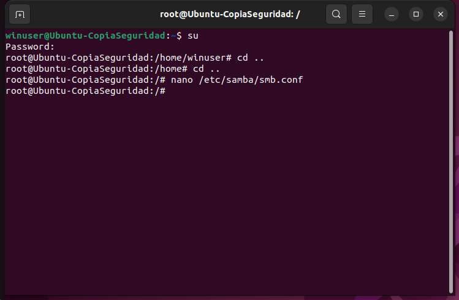
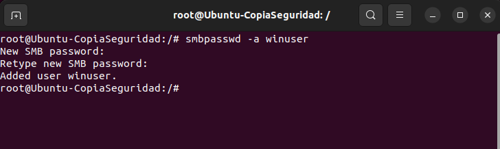
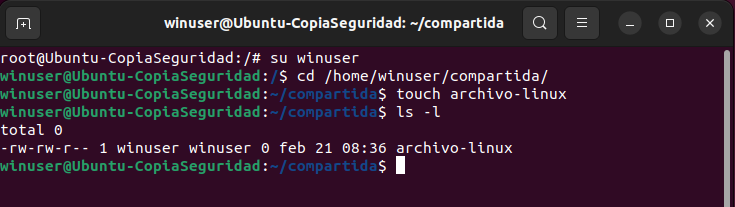
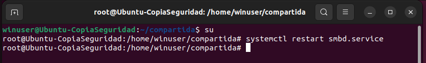
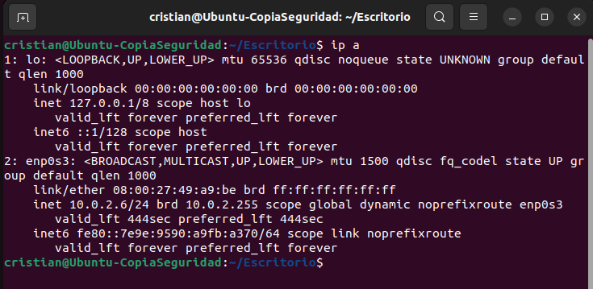

Desde el usuario root y con el comando nano abrimos el archivo de configuración de samba que se encuentra
Bajamos al final del archivo y escribimos lo siguiente:
[Compartida]
path=/home/winuser/compartida
browseable=yes
read only=no
valid users=winuser
En estas líneas definimos la ruta donde se encuentra el archivo, que sea navegable para poder encontrarla en la red,
solo lectura no por que queremos que el usuario pueda escribir y ejecutar y por ultimo definimos el usuario valido que en nuestro caso sera winuser.
Siendo usuario root añadimos a winuser a los usuarios de samba con el comando smbpasswd -a winuser asignandole una contraseña.
Nos movemos hasta la carpeta compartida y con el comando touch creamos un archivo llamado archivo-linux. Hacemos un ls -l para comprobar que se ha creado correctamente
Con el comando systemctl restart smbd.service reseteamos el servicio de samba desde root.
Con el comando ip a obtenemos la ip de nuestro equipo.
